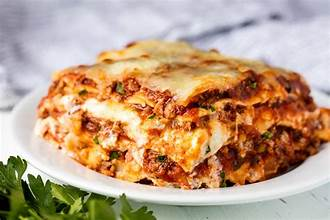

Description
Lasagna is the name of one of the oldest
and best-known pasta shapes. It is usually
rectangular or ribbon shaped, thicker than
tagliatelle, made from a dough based on
flour and eggs, with numerous local variants.
Ingredients
- ½ pound ground pork, ½ pound lean ground beef
- 1 diced onion is cooked until translucent with the ground meat
- 1 can of tomato sauce and 1 can of crushed tomatoes
- 2 tablespoons of parsley and crush one clove of garlic
- 1 dash of sugar
- ¾ teaspoon of dried basil, dried oregano, salt, and black pepper
- 1lbs of lasagna noodles
- Some shredded mozzarella.
- A few eggs
Steps
- Cook the meat: Cook the ground meat in a skillet
until browned and crumbly. Add the onion and
continue cooking until it's translucent. Stir in the
canned tomato products, half of the parsley,
garlic, basil, 1.5 teaspoons of salt, oregano,
and sugar.
- Cook the noodles: Boil the lasagna noodles in lightly salted
water until they're al dente.
- Make the cheese layer: Mix cottage cheese,
Parmesan cheese, eggs, the remaining parsley, the remaining
salt, and pepper in a bowl.
- Assemble the lasagna: Layer the ingredients
according to the recipe (starting with sauce and ending
with mozzarella) until the lasagna is assembled.
- Bake the lasagna: Cover with foil and
bake in the preheated oven for about half an hour.
Remove the foil and continue baking until the top
is golden brown.